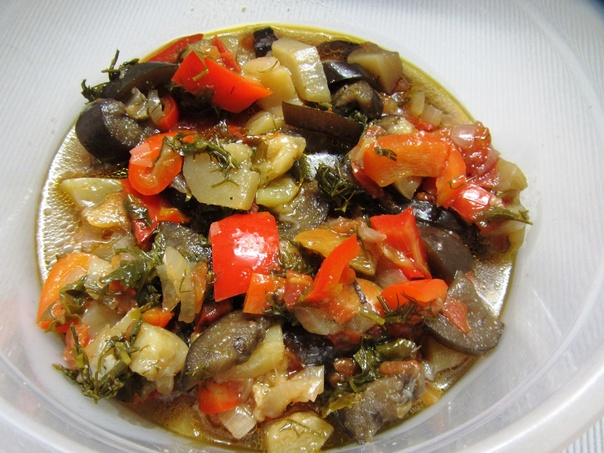

Рагу
 1 час 30 минут
1 час 30 минут
 4-6 порций
4-6 порций
400-500 калорий
Рагу — это сытное и ароматное блюдо, приготовленное из мяса, овощей и специй. Оно идеально подходит для семейного ужина и радует своим насыщенным вкусом.
Ингредиенты
- Для рагу:
- 500 г говядины
- 2 большие картофелины
- 2 моркови
- 1 луковица
- 1 болгарский перец
- 2 помидора
- 2 ст. ложки томатной пасты
- 3 зубчика чеснока
- 2 ст. ложки растительного масла
- 1 ч. ложка паприки
- Соль и перец по вкусу
- 2 стакана воды или бульона
- Для подачи:
- Свежая зелень (петрушка, укроп)
- Сметана (по желанию)
Приготовление
- Подготовка ингредиентов:
- Мясо нарезать кусочками среднего размера.
- Овощи очистить и нарезать: картофель — кубиками, морковь — кружочками, лук — полукольцами, перец — соломкой.
- Помидоры обдать кипятком, снять кожицу и нарезать кубиками.
- Приготовление мяса:
- В глубокой сковороде или кастрюле разогреть растительное масло.
- Обжарить мясо до золотистой корочки.
- Добавить лук и морковь, обжарить до мягкости.
- Добавление овощей:
- Добавить болгарский перец и помидоры, тушить 5 минут.
- Влить томатную пасту, разведенную в воде, и добавить специи.
- Тушение:
- Добавить картофель и влить воду или бульон.
- Довести до кипения, затем уменьшить огонь и тушить под крышкой 40-50 минут до готовности мяса и овощей.
- Завершение приготовления:
- За 5 минут до готовности добавить измельченный чеснок.
- Перед подачей украсить свежей зеленью и подавать со сметаной (по желанию).